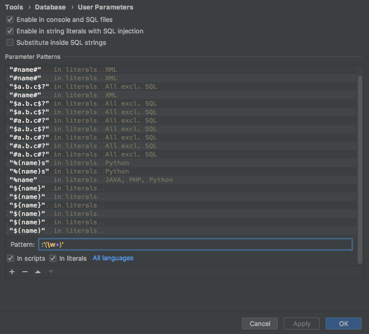

PyCharm の Database Console で PostgreSQL のプレースホルダー (インタポレーション) を SQL パラメーターとして使えるようにする
手順
Database Console 上で スパナのボタン ( Settings ) -> User Parameters
(もしくは、 Preferences -> Tools -> Database -> User Parameters)
こう
In scripts を ON にしないと、 Database Console で使用できない
Apply ボタンを押下
OK ボタンを押下